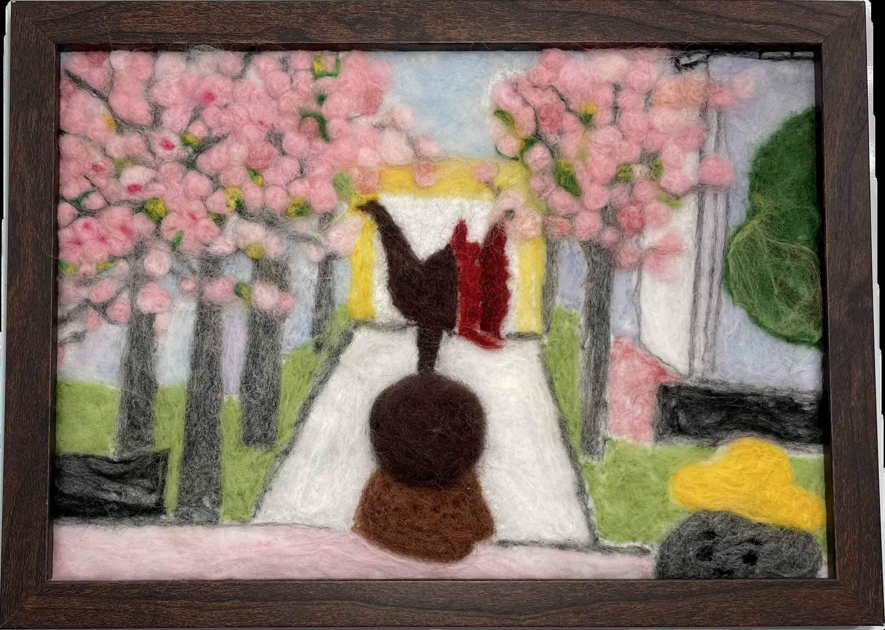

作品名稱：櫻石巧克力
作者姓名：蕭方晴
作品主題：理想中的校園紅磚道兩旁開滿了粉色花瓣，讓人忍不住唱出：You are my destiny ~
作品敘述：春天的校園總是特別美，櫻花開滿大道，走在其中彷彿置身夢境，這幅羊毛氈作品不只是校園的縮影，更是屬於我們的回憶與小小浪漫，希望看到的人也能深陷校園的浪漫。
Springtime on campus is always especially beautiful, with cherry blossoms lining the avenue, making it feel like a dream to walk through. This artwork is not just a reflection of our school but also a glimpse into our cherished memories and little moments of romance. I hope those who see it can also be drawn into the romance of our campus.